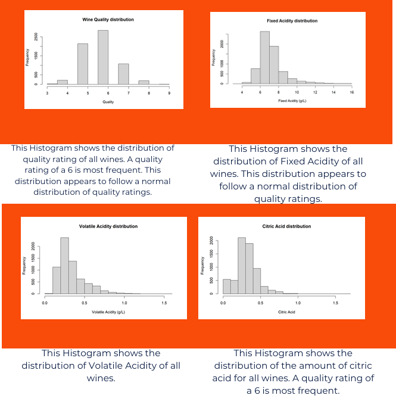
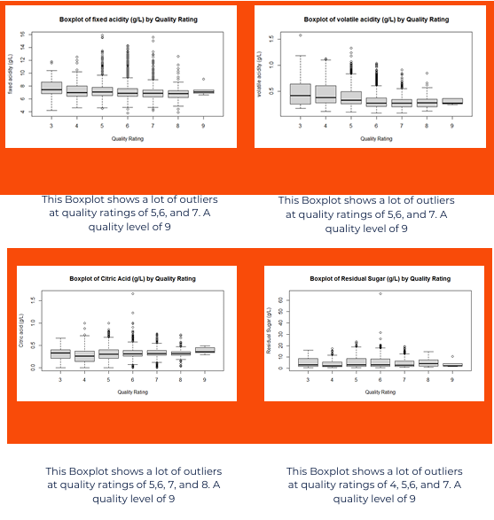
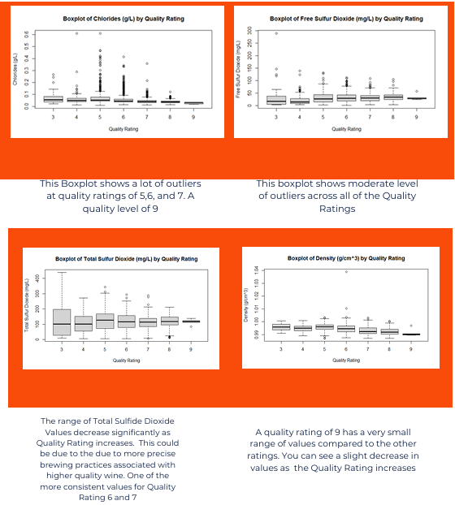
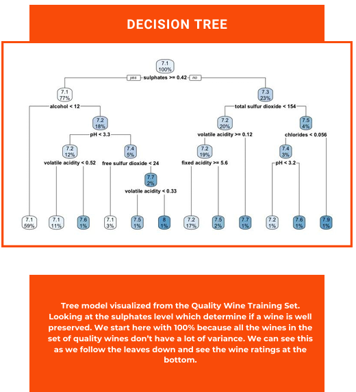

Wine Quality Analysis
Executive Summary
Analyzed 6,497 wine samples using machine learning and statistical analysis to identify the factors most strongly associated with wine quality. Built predictive models to estimate quality scores and provide insights into production optimization.
- Dataset: 6,497 wine samples
- Tools: Python, Pandas, NumPy, Scikit-Learn, Matplotlib
- Models: Linear Regression, Random Forest, Decision Tree
- Best R²: Add model result here

Business Problem
Wine producers must maintain consistent product quality to meet customer expectations and protect their brand reputation. However, evaluating wine quality traditionally relies on expert tasting panels, which can be time-consuming, subjective, and costly.
The challenge is determining whether measurable chemical properties of a wine can be used to predict its quality rating before it reaches consumers. If key quality drivers can be identified, wineries can improve quality-control processes, optimize production decisions, and focus on characteristics that are most likely to result in higher-rated products.
This project analyzes wine chemistry data and develops predictive models to better understand which factors influence wine quality and whether quality ratings can be estimated using objective measurements.
Dataset Overview
The dataset used for this analysis contains physicochemical measurements and quality ratings for Portuguese Vinho Verde wines. The objective was to determine which chemical properties have the greatest influence on wine quality and whether those characteristics can be used to accurately predict quality ratings.
6,497
Records
11
Features
0
Missing Values
3–9
Quality Range
Key Variables
| Variable | Description |
|---|---|
| Fixed Acidity | Concentration of non-volatile acids in wine. |
| Volatile Acidity | Amount of acetic acid present, which can affect taste. |
| Citric Acid | Contributes freshness and flavor balance. |
| Residual Sugar | Amount of sugar remaining after fermentation. |
| Chlorides | Measure of salt concentration. |
| Sulphates | Preservative compounds that can influence quality. |
| Alcohol | Percentage of alcohol by volume. |
| Quality | Expert-rated wine quality score (target variable). |
Before modeling, the dataset was examined for missing values, outliers, and relationships between variables. Since no missing values were present, the data was ready for exploratory analysis and machine learning model development.
Tools & Technologies
Exploratory Data Analysis
Histograms, boxplots, and a correlation matrix were used to explore the distribution of the data, identify potential outliers, and examine relationships between variables.



The distributions of wine characteristics were explored through histograms and boxplots. Understanding the variation and spread of these features was important for interpreting the data and identifying potential outliers.

A correlation matrix was used to examine relationships between individual attributes and the wine quality rating. This helped identify variables that may have stronger relationships with the target variable and informed subsequent model development.
Model Development
To extend the analysis, machine learning models were developed to predict wine quality based on the measured physicochemical characteristics.

Key Exploratory Findings
- Alcohol showed the strongest positive correlation with quality.
- Volatile acidity demonstrated a negative relationship with quality.
- Quality ratings were concentrated between 5 and 7.
- Several variables contained meaningful outliers.
The distribution of quality ratings revealed a concentration of average-quality wines, suggesting a class imbalance that could impact model performance. This insight informed the selection of evaluation metrics during model development.